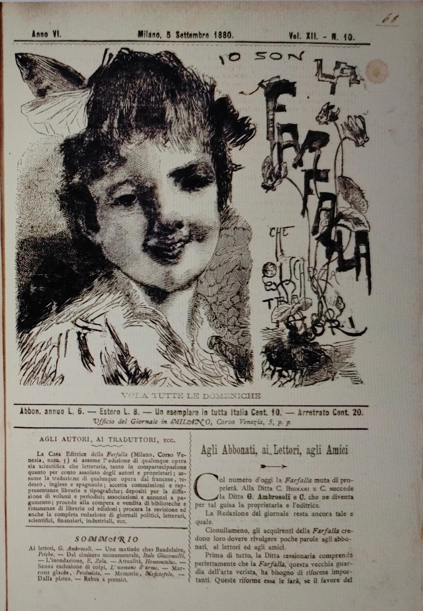
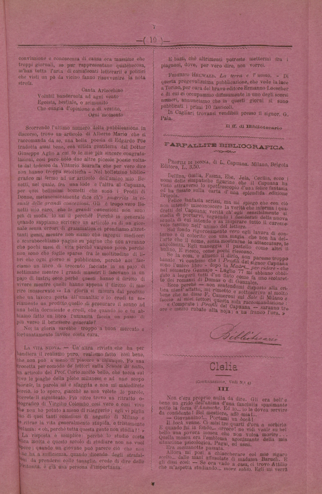
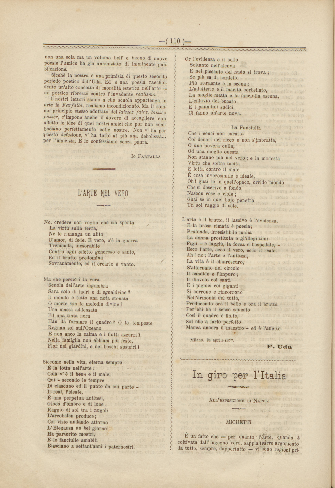
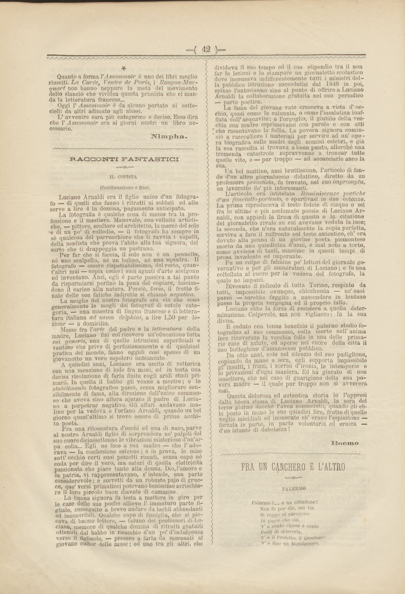

La Farfalla
Fondata a Cagliari da Angelo Sommaruga, «La Farfalla» vide la luce il 27 febbraio 1876. Si presentava al pubblico «semplice, pulita, senza fregi». Tra i maggiori collaboratori: Giarelli, Bacaredda, Cameroni e Valera. Nel 1877 si trasferì a Milano con una nuova testata liberty disegnata da Tranquillo Cremona.
- Attività: 1876 – 1883
- Numeri: 14 uscite regolari
- Prezzo: 10 Centesimi
Il Progetto COVerLeSS
Corpus Online del Verismo tra Letteratura, Storia e Società
COVerLeSS è un ambiente web integrato e open access dedicato alla ricezione contemporanea della letteratura del Verismo italiano (dalle novelle di Vita dei campi al Mastro-don Gesualdo). La forte impronta storico-sociale di questo movimento si è riflessa in un ricchissimo pullulare di recensioni, polemiche e saggi.
Questo materiale è stato riunito in un corpus che offre la possibilità di interrogazioni strutturate e percorsi didattici. COVerLeSS mette a disposizione strumenti capaci di fare luce sui rapporti tra dibattito politico-sociale, le problematiche dell'Italia unita e la letteratura verista.
Il corpus riunisce:
- Recensioni contemporanee;
- Periodici di taglio 'monografico';
- Saggi teorici.
L’utente può individuare parole-chiave, espressioni ricorrenti e fraseologie caratterizzanti, usufruendo di un vero e proprio dizionario ‘teorico-pratico’.
Tramite i pulsanti sottostanti è possibile interagire ulteriormente con il testo.
Il pulsante "Scioglimento" mostra le parole troncate.
Il pulsante "Ortografia moderna" permette di confrontare la grafia ottocentesca.
Il pulsante "Traduzione" chiarisce i termini arcaici.
Il pulsante "Note filologiche" svela le note al testo.
Recensione a Luigi Capuana, Profili di donna
Immagine originale

FARFALLITE BIBLIOGRAFICA
PROFILI DI DONNA, di L. Capuana. Milano, Brigola Editore, L.Lire 3,50.
Delfina, Giulia, Fasma, Ebe, Jela, Cecilia, ecco i nomi delle simpatiche figurine che il Capuana ha visto attraverso lo spettroscopio[1] d'una felice fantasia ed ha fissato sulla carta d'una splendida edizione Brigola.
Felice fantasia scrissi, ma mi spiego che con ciò non intendo misconoscere la verità ch'egli sensibilmente si studia di portarvi, seguendo i desiderati della nuova scuola di cui intende e sa inspirare tutto il carezzevole fascino nell'animo del lettore.
Sul fondo rigorosamente vero egli lavora di contorno e di colorito con una magia che non ha dell'arte che il nome, senza mostrarne le attaccature, le angolositàspigolosità. Egli maneggia il pastello come altri il bulino. E riesce, come pochi riescono.
Se la cosa, o almeno il dirlo, non paresse troppo banale vi confesso che i Profili del signor Capuana sono l'unico libro - dopo la Madri... per ridere - che nel semestre GennajoGennaio - Luglio 77 mi abbiano obbligato a leggerli tutti d'un fiato come fa uno scolaretoscolaretto dei romanzi di Dumas o di Gonzales.
Ecco perchè - non sentendomi disposto alla critica nient'affatto, mi rimetto e sottoscrivo al molto bene che ne disse F.Felice Cameroni sul Sole di Milano e faccio ai miei lettori questa sola raccomandazione :
« Comprate i Profili del Capuana — saranno tre ore e mezzo rubate alla nojanoia; a un franco[2] l'ora. »
Note editoriali
- spettroscopio: Lo spettroscopio è uno strumento ottico scientifico. Usarlo come metafora per descrivere il modo in cui Capuana analizza l'animo femminile è un chiaro segnale della mentalità Positivista: la letteratura inizia a usare il lessico delle scienze esatte per studiare la società.
- un franco: Moneta in uso all'epoca (franco francese o italiano pre-lira consolidata), utilizzata qui colloquialmente per sottolineare il basso costo del libro e il suo alto rendimento in termini di intrattenimento.
L'arte nel vero
Immagine originale

Regesto
Componimento in versi in cui l'autore riflette sul concetto di realismo e verismo nell'arte. Attraverso una serie di contrasti tra il bello e il brutto, l'ideale e il reale, la virtù e il vizio, il poeta critica l'eccesso di un'arte che indugia solo sugli aspetti più degradanti e oscuri dell'esistenza umana (come l'ospedale, la prostituzione, il lupanare), sostenendo che la vera armonia risiede in un equilibrio, in un chiaroscuro dove l'affetto del "maestro" possa ricongiungere il brutto e il bello.
L'ARTE NEL VERO
Note editoriali
- Biasciano: Termine popolare e colloquiale inserito in poesia per polemizzare contro le derive naturaliste.
- L'adulterio e il marito corbellato: Termine gergale e comico per indicare un uomo deriso o tradito.
Recensione a Émile Zola, L'Assommoir
Immagine originale
Immagine originale

BIBLIOGRAFIA
- Emilio Zola. — L' assommoirL'assommoir. Paris. Charpentier & Comp. editori L.Lire 3,50.
Avete mai vedutovisto un padrone-spazzacamino inferocire contro lo sgraziato piccino ch'egli ha comprato e cui batte regolarmente ogni mattina ed ogni sera?
Avete mai visto il lenonesfruttatore del lupanarebordello il quale schiaffeggia impunemente la miserabile che non ha saputa guadagnaresaputo guadagnare la sua giornata?
Avete mai visto un figlio alzar la mano sulla sua vecchia madre, vituperandoinsultando i di lei bianchi capegli collei suoi bianchi capelli con le più orrende contumelieoffese...?
Ebbene se avete vedutovisto tutto questo; ebbene, allora dei tre orrori diversi da voi provati fate un orrororrore solo: e questo orrore, in verità io vi dico, non sarà ancora la millesima parte dell'orrore provato da me alla lettura del nuovo romanzo L' assommoirL'assommoir, testèpoco fa pubblicato da Emilio Zola, il valentissimo caposcuola del genere realista.
Dieci volte ho gittatogettato via il libro, perchè, qui, al cuore, mi sentiva un vero dolor fisico: e dieci volte l'ho ripreso, per quel medesimo senso di acre volontà che spinge il ferito a tentare coll'con l'unghia l'epidermide d'una piaga non perancoancora cicatrizzata...
Quanto a forma l'Assommoir è uno dei libri meglio riusciti. La Curée, Ventre de Paris, i Rougon-Macquart non hanno neppure la metà del movimento dello slancio che vivifica questa primizia che ci manda la letteratura francese...
Oggi l'Assommoir è da alcuno portato ai settecielisettimo cielo: da altri adimatosprofondato agli abissi.
L' avvenireL'avvenire sarà più categorico e deciso. Esso dirà che l'Assommoir era ai giorni nostri un libro necessario.